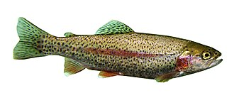

にじます（虹鱒）の生産量 都道府県ランキング
1位から3位までと、とれた量
にじますが日本でいちばん多く育てられているのは静岡県です。1,253 tで、全国（5,202 t）の24%を占めます。

| 順位 | 都道府県 | 収獲量 | 全国に占める割合 |
|---|---|---|---|
| 1位 | 静岡県 | 1,253 t | 24% |
| 2位 | 山梨県 | 676 t | 13% |
| 3位 | 長野県 | 553 t | 11% |
この数字について
- 分類：鮭の仲間
- 全国の収獲量：5,202 t
- この数字が表すもの：収獲量（養殖で育てて取り上げた重さ）
- 調査：内水面漁業生産統計調査（内水面養殖業） 令和6年
- この品目は川や湖の養殖の統計です。
- 37県分を調査（調査していない県は順位に入りません）
にじますの生産量について、よくある質問
- にじますの生産量が日本一の都道府県はどこですか？
- 静岡県です。内水面漁業生産統計調査（内水面養殖業）（令和6年）で1,253 tでした。
- にじますの生産量ランキング2位・3位はどこですか？
- 2位は山梨県（676 t）、3位は長野県（553 t）です。
- にじますの全国の生産量はどれくらいですか？
- 5,202 t（令和6年）です。